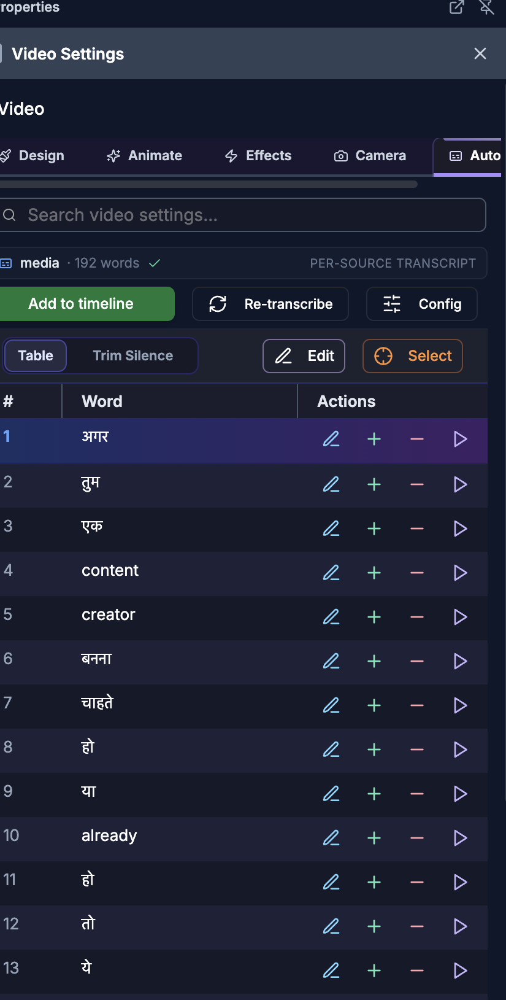
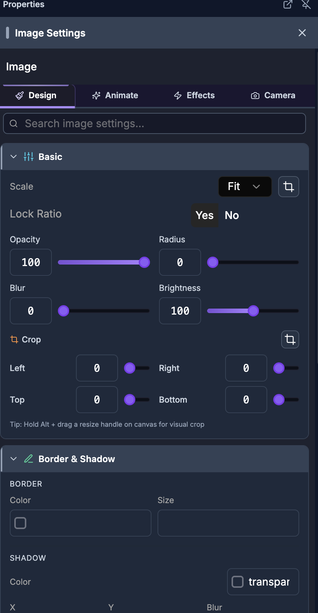
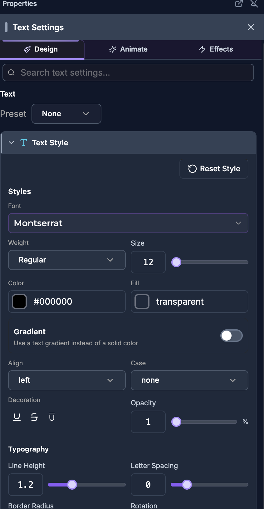
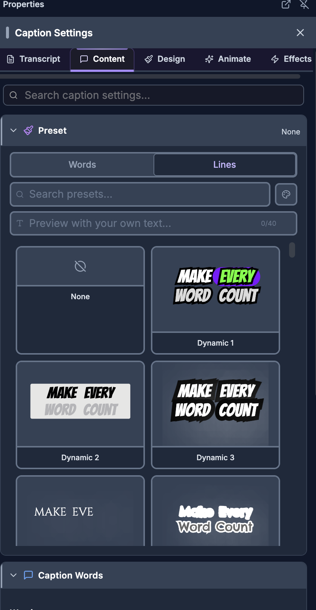
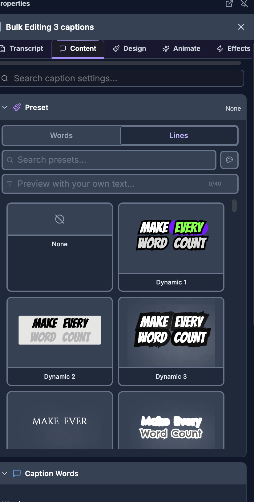
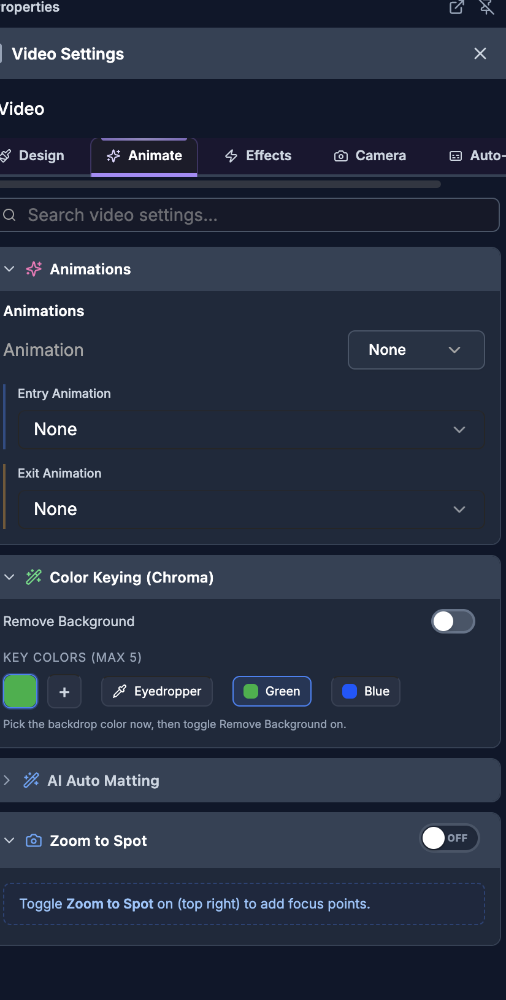

For humans — and for AI helping humans. This document describes how a person edits video by hand using the on-screen controls of the SkillTown video editor. It is not an AI skill or an automation API, so if you are an AI agent, do not treat these steps as callable commands — for programmatic/automated editing use the agent skills and commands documented elsewhere (see
_Agent/AGENTS.md). You may, however, read this doc to answer a user's "how do I…" questions and walk them, step by step, through performing these actions themselves in the editor UI.The properties panel is the right-hand panel that appears whenever you select an item. It gives you every layout, appearance, media, audio, effect, camera, and layer control for that item, grouped into tabs and collapsible sections.
Where to find it¶
- Select an item on the canvas or in the timeline.
- The right-hand properties panel opens automatically. Its header shows Properties (or Tools while other tool panels are open) plus a title that changes with the selected item type.
- If nothing is selected, the panel shows No item selected.
Panel title by item type¶
| Selected item | Panel title |
|---|---|
| Caption | Caption Settings |
| Text | Text Settings |
| Image | Image Settings |
| Video | Video Settings |
| Audio | Audio Settings |
| Shape | Shape Settings |
| Progress bar | Progress Bar Settings |
| Progress frame | Progress Frame Settings |
| Audio-bar visualizers | Lineal Bars Settings, Wave Bars Settings, Hill Bars Settings, or Radial Bars Settings |
| Template / scene | Template Settings |
| Nested scene | Nested Scene (n layers) |
| Anything else | Item Settings |
When several items of the same type are selected, the header shows a bulk title such as Bulk Editing 3 images, with in-panel indicators like Images (3 selected) or Editing all 3 images. When you select mixed item types, the header shows 3 Mixed Items and the panel offers only the shared controls.
Managing the panel window¶
The panel header has controls for how the panel is shown:
| Button / tooltip | What it does |
|---|---|
| Pop out to separate window | Moves the properties panel into its own floating OS window. |
| Bring popout to front | Raises the popped-out window above other windows. |
| Dock panel back / Pin panel back | Returns a floating or popped-out panel to the right side. |
| Undock panel (make floating) | Detaches the panel so you can drag it anywhere over the editor. |
| Expand panel / Collapse panel | Widens or narrows the panel. |
| Drag to resize | Drag the panel's inner edge to change its width. |
| Close panel | Closes the properties panel. |
An AI Editor side panel is available too, opened with Open AI Editor and managed with Dock, Float, Close, Close AI Editor, and Collapse AI Editor. It shows Loading AI... while it starts.
What you can do¶
- Switch between the panel tabs for the selected item (Design, Animate, Effects, Camera, Auto-Captions, Basic, Content, Settings, Transcript — the set depends on item type).
- Search the panel with the per-item search box (for example Search image settings...).
- Expand or collapse each section by clicking its heading.
- Align, distribute, position, scale, and rotate items.
- Adjust common appearance: Opacity, Rounded corners, Blur, Brightness, flip, border/stroke, and shadow.
- Set image/video Scale to Fill, Fit, Original, or Custom; crop with numeric edges or the visual Crop dialog.
- Control clip playback: Volume, Speed / Playback rate, and Reverse; turn a clip Active/Off or Audio/Muted.
- Apply Clip Mask shapes, Blend Mode, Color & Filters grading, Remove Background / Color Keying (Chroma), AI Auto Matting, 3D Camera, Zoom to Spot, and Face Track.
- Style shapes, text, captions, progress bars/frames, and templates with type-specific controls.
- Edit nested-scene layers, and use floating pickers for Fonts, Presets, and Animations.
- Remove all motion with Reset All.
How to open and navigate the properties panel¶

- Click a single item on the canvas or timeline.
- Click a tab at the top of the panel. The available tabs depend on the item type:
| Item type | Tabs |
|---|---|
| Image | Design, Animate, Effects, Camera |
| Video | Design, Animate, Effects, Camera, Auto-Captions |
| Shape | Design, Effects |
| Text | Design, Animate, Effects |
| Caption | Transcript, Content, Design, Animate, Effects |
| Audio | Basic, Effects, Auto-Captions |
| Template / scene | Content, Settings, Effects |
| Progress bar / frame | Design, Effects |
- Use the search box to jump to a control by name. Each item type has its own placeholder: Search image settings..., Search video settings..., Search text settings..., Search caption settings..., Search audio settings..., or the generic Search settings.... You can search by common terms such as volume, opacity, blur, brightness, border radius, scale, fit, gain, meter, eq, playback rate, reverse, keyframe, easing, chroma, blend, saturation, camera, focus point, face tracking, font, letter spacing, caption style, fade in, fade out, gradient, change shape, and many more.
- Open or close a section by clicking its heading (for example Basic, Border & Shadow, Color & Filters, Speed, Keyframes). Section open/closed states are remembered.
How to align and distribute items¶
The Align toolbar appears at the top of the panel for supported visual items. Its heading reads Align for one item or Align (n items) for a selection.
| Control (tooltip) | What it does |
|---|---|
| Align left to canvas / Align left to selection | Moves the item to the left edge of the canvas, or aligns the selection's left edges. |
| Center horizontally | Centers horizontally. |
| Align right to canvas / Align right to selection | Right edge of canvas or selection. |
| Align top to canvas / Align top to selection | Top edge of canvas or selection. |
| Center vertically | Centers vertically. |
| Align bottom to canvas / Align bottom to selection | Bottom edge of canvas or selection. |
| Distribute horizontally | Spaces selected items evenly left-to-right. |
| Distribute vertically | Spaces selected items evenly top-to-bottom. |
| Need 3+ items | Tooltip shown when distribute is unavailable (fewer than three items selected). |
Whether the target is the canvas or the selection changes automatically based on how many items are selected.
How to adjust common transform and appearance controls¶
These controls recur across most visual item types (exact labels below are the on-screen text).
| Control | Label / units | What it does |
|---|---|---|
| Opacity | Opacity, shown in % | Changes transparency. |
| Corner radius | Rounded, in px (also Radius in some panels) | Rounds the item's corners. |
| Blur | Blur, in px | Softens the item. |
| Brightness | Brightness, in % | Darkens or brightens the item. |
| Flip | Flip, with Flip X and Flip Y | Mirrors horizontally or vertically. |
| Scale | Scale | Resizes without changing the source dimensions. |
| Rotation | Rotate / Rotation | Rotates the item. |
| Lock ratio | Lock Ratio with Yes / No | Keeps width and height proportional while resizing. |
Number controls have both a slider and a typed value; drag the slider or type a number. You can also drag an item on the canvas to move it, and use its canvas handles to resize or rotate.
How to edit image properties¶
Select an image. The panel title is Image Settings (bulk: Images (n selected) / Editing all n images).

Design tab
| Section | Controls |
|---|---|
| Style Template | Pick a motion/style preset; see the animation options below. |
| Entry Animation / Exit Animation | Choose how the image enters and leaves; None to clear. |
| Basic | Scale (Fill, Fit, Original), Crop, Opacity, Radius, Blur, Brightness. |
| Border & Shadow | Border and Shadow controls (color, size, X, Y, blur). |
| Clip Mask | Mask the image to a shape (see Clip Mask below). |
| Remove Background | Chroma/background removal controls. |
| Blend Mode | How the image blends with layers beneath it. |
| Color & Filters | Color-grade presets and adjustments. |
| Reset All | Remove all keyframes, effects, and animations. |
Animate tab — Style Template, Entry Animation, Exit Animation, and Animations.
Effects tab — Keyframes, Effects, Clip Mask, Remove Background, Blend Mode, Color & Filters, Reset All.
Camera tab — 3D Camera and Zoom to Spot.
How to edit video properties¶
Select a video. The panel title is Video Settings.
Design tab
| Section | Controls |
|---|---|
| Basic | Scale (Fill, Fit, Original, Custom), Crop, clip toggle Active/Off, audio toggle Audio/Muted, Volume, Opacity, Radius, Blur, Brightness. |
| Audio | Expanded audio controls for the clip's sound. |
| Speed | Playback speed (see the Speed table below). |
| Animations | Enter/exit and looping motion. |
| Border & Shadow | Border and shadow styling. |
| Color & Filters | Color grading. |
| 3D Camera / Zoom to Spot | Camera motion. |
| Face Track | Auto-follow a speaker's face. |
The clip and audio toggles show helpful tooltips: Clip is OFF — invisible & silent in preview/export. Click to turn it back on., Clip is active. Click to turn it off (invisible + silent)., Audio is muted. Click to unmute this clip., and Audio is on. Click to mute this clip.
Animate tab — Animations.
Effects tab — Keyframes, Effects, Clip Mask, Color Keying (Chroma), AI Auto Matting, Blend Mode, Color & Filters.
Camera tab — 3D Camera and Zoom to Spot.
Auto-Captions tab — generate captions from the clip. If unavailable it shows Transcription is unavailable for this clip. Caption styling is covered in Text and Captions.
Speed controls (video and audio)¶
| Control | What it does |
|---|---|
| Playback rate | Shows the current speed; tip: Controls clip playback speed. |
| 0.25x, 0.5x, 0.75x, 1x, 1.5x, 2x, 3x, 4x | Preset speeds. |
| Custom | Fine-tune the speed. |
| Reverse | Play the selected clip backward. |
How to edit audio properties¶
Select an audio item. The panel title is Audio Settings.

Basic tab
| Section / control | What it does |
|---|---|
| Source | Shows the audio file; Copy full path copies the source path. If none, shows No audio source available. |
| Volume | Adjusts level (audio items allow boosted values above 100%). |
| Clip toggle | Active / Off includes or excludes the clip. |
| Audio toggle | Audio / Muted mutes or unmutes. |
| Track role (auto-duck) | Default, Voice, or Music — controls automatic ducking. |
| Audio Processing | Opens processing controls (gain, EQ, and related tools). Includes Open master bus controls for the master bus. |
| Live meter | Real-time L/R levels. Toggle with Enable live meter / Disable live meter (saves CPU). Shows (paused) when playback is stopped. |
| Loudness | Analysis values Peak, RMS, source, and after volume. Shows analyzing…, No audio source., or Couldn't analyze (silent track or unsupported codec). as needed. |
| Speed | Playback speed presets, Custom, and Reverse (same as video). |
The Gain fader shows a decibel scale (−∞ dB at the bottom). Tip: Drag to adjust · double-click for 0 dB.
Effects tab — Animations, Effects, Keyframes.
Auto-Captions tab — generate captions from the audio.
How to edit shape properties¶
Select a shape. The panel uses the Design and Effects tabs.
Design tab
| Section / control | What it does |
|---|---|
| Fill Color | Changes the shape fill (solid or gradient). |
| Stroke | Border/stroke controls: Stroke Color and Stroke Width. |
| Appearance | Opacity, Blur, and Brightness. |
| Size | Width and Height inputs. |
| Shadow | Shadow Color, X, Y, and Blur. |
| Change Shape | Swap the current shape for another shape thumbnail. |
Effects tab — Keyframes.
How to edit text properties¶
Select a text item. The panel uses Design, Animate, and Effects tabs.

Design tab
- Text Style — the main typography section, with Reset Style to restore defaults. Controls include Styles (font family), Size, Typography, Line Height, Letter Spacing, Word Spacing, Border Radius, Rotation, Weight, Decoration, and Case (As typed, Uppercase, Lowercase). Alignment offers Left, Center, Right. Blend Mode and Background Color are also here.
- Fill — choose a solid Color or turn on Gradient (tip: Use a text gradient instead of a solid color) and set Color 1, Color 2, and Direction. Padding offers Top, Right, Bottom, and Left.
- Stroke & Shadow — add outline and shadow. Use Add Shadow (under Extra Shadows, listed as Shadow 1, Shadow 2, …) and Add Stroke (under Extra Strokes, listed as Stroke 1, Stroke 2, …).
- Word Colors — Pick colors for individual words. Use Reset All to clear. If there is no text yet it shows Add some text to style words.
Animate tab — Animations.
Effects tab — Keyframes and Effects.
How to edit caption properties¶
Select a caption. The panel uses Transcript, Content, Design, Animate, and Effects tabs.

| Tab | Contents |
|---|---|
| Transcript | The caption transcript editor, for correcting words and timing. |
| Content | Preset (choose a caption style), Caption Words, and Caption Colors. |
| Design | Text Style and Stroke & Shadow, as for text. |
| Animate | Animations. |
| Effects | Keyframes and Effects. |
If a caption has no words yet, the panel shows No caption text yet and This caption has no words. Add captions to get started. Caption styling and word editing are documented in Text and Captions.
How to edit template (scene) properties¶
Select a template scene. The panel title is Template Settings and it uses the Content, Settings, and Effects tabs. Use the Code button (View & fork source code) to open the scene's source.
Content tab¶
Scene Orientation sets the canvas for the scene:
| Control | Options |
|---|---|
| Orientation | Landscape, Portrait |
| Size presets | 1080p, 720p, Square, 4:5, 9:16 |
| Custom size | Width, Height |
| Speed | Playback speed (title: Playback speed). |
| Opacity | Scene opacity, in %. |
| Reset | Restores orientation defaults. |
Live Preview shows a live render of the scene. Use Float / Dock to detach it (Undock preview (float freely) / Dock preview back); when floating it says Preview is floating — drag it anywhere on screen and Click here to dock back.
Content — the scene's own fields, taken from that template's schema. Field labels vary by template; each field type is edited differently:
| Field type | How you edit it |
|---|---|
| Text | A text box; required fields are marked with *. |
| Number | A number box with a slider. |
| Boolean | A toggle switch. |
| Color | A color swatch that opens a picker (Click to pick color), a hex box (#000000), a transparent toggle (Set to opaque / Set to transparent), and Close color picker. |
| List of text (tags) | Type into Add item... and press add; each tag has a remove button; a count shows n items. |
| List of numbers | Add and Remove last buttons. |
| List of objects | Rows labeled Item 1, Item 2, … each expanding to a sub-form. |
| Choice / enum | A dropdown with placeholder Select... |
| Range | Two or three linked sliders labeled Start → End, or Start → Peak → End. |
| Media | A media picker (see below). Grouped under Media. |
| Camera fields | Grouped under Camera. |
Style Overrides — style fields grouped under Effects, Typography, Theme Colors, and Layout. Advanced users can open Raw JSON (advanced) to edit the style JSON directly.
For deep editing you can open the full JSON editor (Scene Props —
Settings tab¶
| Section | Controls |
|---|---|
| Background & Effects | Background color, Gradient intensity, and Vignette strength. |
| Size & Crop | W / H; size presets Full, Half, Square, Wide, Banner; Layout Presets (Full, Top Half, Bottom Half, Left Half, Right Half, Top Left ¼, Top Right ¼, Bottom Left ¼, Bottom Right ¼, Center Card, Top ⅓, Middle ⅓, Bottom ⅓); Crop Edges (Left, Right, Top, Bottom) with Reset, Center 50%, and Top Half quick actions. |
| Video Settings | For video-based scenes: Volume, Speed, Blur, Brightness, Radius, plus an Audio subsection. |
| All Props (JSON) | Inline JSON editor with Apply/Saved, Copy, and Expand (Open in full editor). |
| Animations | Scene Enter and Exit motion, with frame durations (fr) and quick presets Fade In/Out, Slide Up, Scale In, and None. Full options: None, Fade, Slide Up, Slide Down, Slide Left, Slide Right, Scale. |
Effects tab¶
Effects, Keyframes, and (where supported) 3D Camera and Zoom to Spot.
How to edit progress bars and progress frames¶
Select a progress item (Progress Bar Settings or Progress Frame Settings). Tabs are Design and Effects.
Design tab
| Section | Controls |
|---|---|
| Style | Progress-bar styles Solid, Segmented, Gradient, Glow, Striped, Outline, Dual; progress-frame styles Corner, Full Border. Style-specific extras: Segments and Gap (Segmented), Border (Outline), Gradient End (Gradient). |
| Colors | Progress Color and Track Color. |
| Settings | Inverted toggle, Height (bars), Direction (Horizontal / Vertical, bars), Thickness (frames), Flip X / Flip Y (frames), plus Radius, Opacity, Blur, and Brightness where applicable. |
| Quick Presets | One-tap color presets: Pink, Blue, Green, Purple, Orange, Red, Yellow, Teal, Indigo, Rose, Lime, White. |
Effects tab — Animations.
How to edit nested scene layers¶
A nested scene groups several items. Its panel title is Nested Scene (n layers).
| Control | What it does |
|---|---|
| Uncombine | Breaks the nested scene back into separate items (confirms Ungrouped n items; shows Failed to uncombine on error). |
| Select All | Selects every layer inside. |
| Quick Edit | Compact controls for the selected layer: Position & Size, Opacity, Round, and (for video layers) Vol, Speed, Blur, Bright. |
| Full Settings | Opens the full native settings for that layer's type. |
| Batch (multiple layers) | Opacity (all) and Visibility with Show / Hide. |
Use each layer row's arrow controls to reorder a layer, the eye control to show/hide it, and the trash control to delete it. You cannot remove the last layer — it shows Can't remove last layer.
How to edit multiple mixed items¶

When you select different item types together, the header shows n Mixed Items and the panel offers shared controls only:
| Section / control | What it does |
|---|---|
| Position (Relative) | Nudge all selected items together. |
| Move X / Move Y | Step buttons -10, -1, +1, +10. |
| Scale | Resize all selected items. |
| Rotation | Rotate all selected items. |
| Appearance | Shared Opacity. |
How to apply a clip mask¶
Open the Clip Mask section (image and video Effects/Design). Choose a mask shape:
None, Circle, Rounded, Diamond, Hexagon, Star, Triangle, Pentagon, Octagon, Heart, Cross, Arrow.
How to set a blend mode¶
Open the Blend Mode section. Modes are grouped by effect:
| Group | Modes |
|---|---|
| Basic | Normal |
| Darken | Darken, Multiply, Color Burn |
| Lighten | Lighten, Screen, Color Dodge |
| Contrast | Overlay, Hard Light, Soft Light |
| Inversion | Difference, Exclusion |
| Component | Hue, Saturation, Color, Luminosity |
How to color-grade with Color & Filters¶
Open Color & Filters. Pick a preset or adjust manually.
- Presets: Cinematic, Vintage, B&W Film, Warm, Cool, Noir, Faded, Vivid, Sunset, Moody, Pastel, Teal & Orange, Dream, Hi Contrast, Matte. Use Reset to clear.
- Adjust sliders: Contrast, Saturation, Hue (in °), Sepia, and Grayscale (in %).
How to remove a background (Color Keying / Chroma)¶
Open Remove Background (image) or Color Keying (Chroma) (video).
| Control | What it does |
|---|---|
| Remove Background | Master toggle for keying. |
| Key Colors (Max 5) | Add up to five colors to knock out; each has Remove this color, and you can Add another key color. |
| Eyedropper | Pick a color from the video (shows Picking… while active). Quick presets set a green/blue/etc. screen. |
| Tolerance, Edge Softness, Spill Removal | Fine-tune the key; Reset restores defaults. |
| Denoise (clean edges) | Smooths edges (Global — smooths chroma for all colors). |
For automatic cutouts, open AI Auto Matting. It notes Requires the Desktop app for local GPU processing. and Requires an AI model (~15MB) to be downloaded once to your device. Use Download AI Model (shows Downloading...); once ready it shows AI Matting Active (Local GPU).
How to use the 3D Camera and Zoom to Spot¶

Open 3D Camera (Camera/Effects tab). Turn it on with Toggle 3D Camera on, then Pick a movement from the presets and refine under Your moves:
Movement presets: Orbit Right, Orbit Left, Tilt Up, Tilt Down, Push In, Pull Out, Dramatic, Hover, Ken Burns, Slide Right, Slide Left, Hold / Pause. Apply modes Replace or Append. Fine controls cover Scale, Rotation, Position, and Focus, with Reset, Undo, and Redo.
Open Zoom to Spot to zoom into focus points. It hints Toggle Zoom to Spot on (top right) to add focus points.
How to track a face (Face Track)¶
Open Face Track (video). It explains Detect faces and auto-pan the crop window to follow the speaker.
| Control | What it does |
|---|---|
| Auto / Follow | Auto splits when two faces are present; Follow pans to a single speaker. |
| Sensitivity | Tight, Normal, or Loose. |
| Preview | Toggles the on-canvas overlay (Show face preview overlay / Hide face preview overlay). |
| Re-detect / Regen | Re-runs detection. |
| Remove | Clears tracking. |
How to add and tune animations¶

Open Animations (Animate/Effects tab). It has In, Loop, and Out tabs; each shows preset thumbnails plus None. When several items are selected with different settings it shows Multiple. Duration sliders are Animation In Duration, Animation Out Duration, and Animation Loop Duration.
Entry Animation / Exit Animation pickers let you choose a preset (or None), set Start, End, and Duration (frames), choose an Easing, and open Tweak Parameters to adjust properties such as Scale, Scale X, Scale Y, Opacity, Position X, Position Y, Rotation, Blur, and Brightness. A (modified) badge appears when you change defaults; use Reset to Defaults or Re-apply with current settings.
Easing options include Linear, Ease, Ease In, Ease Out, Ease In Out, the Quad/Cubic variants, and Back, Expo, Bounce, and Elastic variants.
The Style Template section (images) applies a coordinated look and can add matching sound: toggle Sound Effects ON/OFF (Auto-adds sound effects matching each animation preset.), set Stagger (frames between items), enable Vary (Each image gets a different animation.), and use Copy / Paste to All to share one animation across a selection.
How to manage effects¶
Open Effects. Search with Search effects.... Applied effects appear under Applied (n) with Disable/Enable and Delete per effect. Effect parameters include Timing (Start, End), Fade In, Fade Out, Easing, and effect-specific values (Intensity, Amount, Scale, Speed, etc.).
How to remove all motion (Reset All)¶
Open Reset All. It lists Content to be removed: with counts for Keyframes, Effects, and Animations. Click Remove All Keyframes & Effects; confirm Remove All Keyframes & Effects? with Remove All (or Cancel). This is undoable with Ctrl+Z.
How to crop an image or video¶
- Select an image or video.
- In Basic, click Crop or Visual crop editor.
- In the Crop dialog, choose Aspect Ratio: Free, 1:1, 2:3, 3:2, 3:4, 4:3, 9:16, or 16:9.
- Drag the crop box or its handles in the preview.
- Click Apply to save, or Reset to restore the full image/video.
You can also use the numeric Left, Right, Top, and Bottom edge controls and Reset crop directly in the panel. The panel tip reads: Tip: Hold Alt + drag a resize handle on canvas for visual crop.
How to pick or replace media (template fields)¶
Media fields use a picker with:
| Control | What it does |
|---|---|
| URL or upload... | Type/paste a URL. |
| Upload file | Upload a file from your device. |
| Pick from timeline / Timeline Media | Reuse media already on the timeline. |
| Remove media | Clears the field. |
How to use on-canvas floating controls¶
Some pickers open as floating popovers on the canvas.
| Floating panel | What it does |
|---|---|
| Fonts | Search fonts with Search font... and apply one to the selected text. Shows No font found when there is no match. |
| Presets | Text or caption style presets. Text presets preview the word Text. In caption bulk mode the heading adds Bulk (n), and a Custom entry is available. |
| Animations | Preset thumbnails under In, Loop, and Out tabs; the heading shows the count of affected items. |
Click outside the floating control or use its close icon to dismiss it.
The caption Presets picker also lets you preview against your footage: switch between Words and Lines, search with Search presets..., type your own text in Preview with your own text... (Clear custom text to reset), and change the preview background (Dark, White, Gray, Green, Blue, Red, or Pick custom color). If nothing matches it shows No presets found.
How to arrange layers¶
- For normal timeline items, set front-to-back order by moving items between tracks in the timeline — items on higher/front tracks render above those behind.
- For selected visual items, use the Align controls to line them up.
- For nested scenes, use each layer row's arrow controls to reorder, and Show/Hide (or the eye control) for visibility.
- Use Uncombine to return nested layers to separate timeline items.
Tips & good to know¶
- Not every item shows every section — the panel only shows controls that apply to the selected type.
- Custom appears in Scale only when the current scale is not Fill, Fit, or Original.
- Distribute horizontally / Distribute vertically need at least three selected items.
- Audio Live meter and video effects use extra CPU; AI Auto Matting needs the Desktop app and a one-time model download.
- Audio Volume can exceed 100% for boosting; the Gain fader shows the equivalent in decibels.
- Template Content fields are defined by each scene's schema, so their labels differ from template to template.
- Auto-Captions, caption words, and caption styling are documented in Text and Captions; detailed Animations/Keyframes workflows are covered in the animation manual.
- Section open/closed states and the last-used tab are remembered per item type.